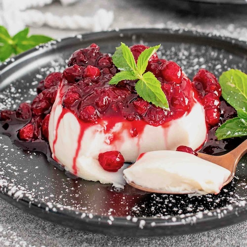

Panna Cotta

A smooth, creamy custard like desert, often topped with barry compote or caramel sauce.
Ingredients
500ml Heavy Cream
100ml Milk
80g Suger
1 tsp Vanilla Extract
2 tsp Gelatin Powder
3 tbsp Cold Water
Berry Compote (Strawberries, Raspberris, Blueberries with Suger)
Caramel Sauce
Instructions
Prepare Gelatin - Sprinkle gelatin over cold water, let sit for 5 minutes to bloom.
Heat Cream Mixture - In a saucepan, heat cream, milk, sugar, and vanilla over medium heat until warm (don’t boil).
Dissolve Gelatin - Remove from heat, stir in bloomed gelatin until fully dissolved.
Pour & Chill - Pour into ramekins or glasses. Refrigerate for 4-6 hours until set.
Serve - Top with berry compote or caramel sauce, and enjoy!
Back to Recipes